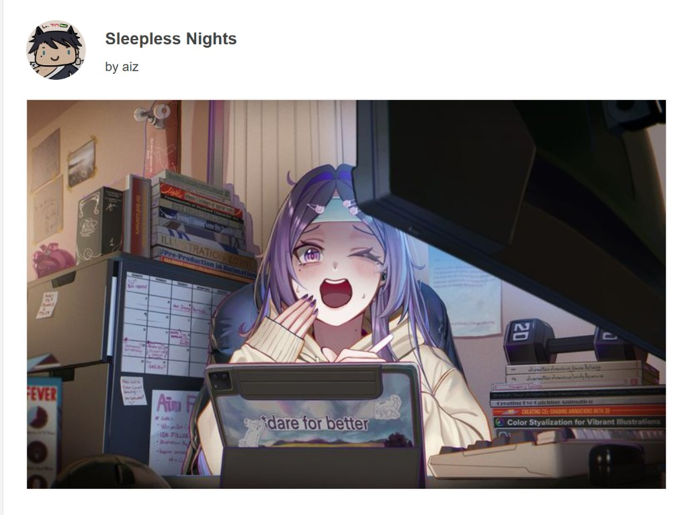

Hello,
This is my first blog entry here and….
Finally—YES. My first art contest award.
This one honestly came out of nowhere. Over the summer, I was stuck in that weird in-between… debating whether I should switch majors or keep pushing forward with DMA at SJSU. Everything felt uncertain. And then somehow, by pure chance (or something bigger, who knows), I came across this contest.
The piece I submitted wasn’t planned. It came out of frustration.
At the time, I had just found out I didn’t get into my desired transfer program. After putting so much time into my portfolio and improving my skills, it felt like everything collapsed at once. Like I had already messed up my “ideal” future before it even started.
But making that piece shifted something.
For the first time in a long time, I wasn’t thinking about approval. I wasn’t thinking about whether it was “good enough.” I just made something for myself. It became a way to say: I was here. I tried. All of that effort meant something, even if it didn’t go the way I planned.
And somehow… that was the piece that got recognized. (Honorable mention just to clarify!)
Another unexpected takeaway from all of this was rediscovering one of my favorite illustrators, Airi Pan. I originally followed her back during the pandemic, but she got lost in the sea of a thousand accounts. Through this contest, I found her again, this time more intentionally.
I started looking into her work, her journey, her videos, her classes. And honestly, it’s been slowly reshaping how I think about art. Not overnight, but little by little, something’s been changing.
As I’m writing this, I’m also rereading notes I left for myself during that time.
So I’ll end with this…
If you have something you want to pursue, just do it anyway! jeez… (Go go go go!)
Link to the official publication

Signing off,
-j